(i) Análise exploratória dos dados
Resumo inicial dos dados e possíveis problemas, como valores ausentes ou outliers.
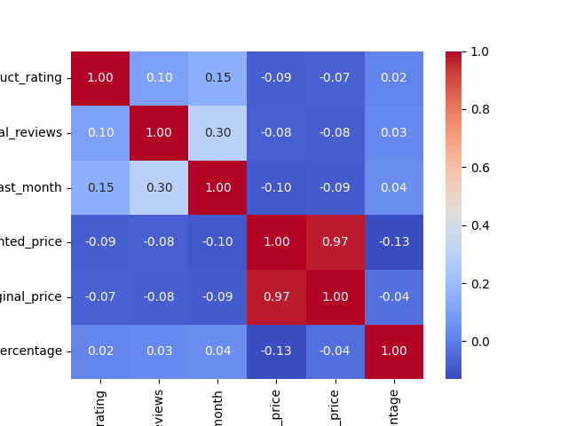Histograma da variável product_rating: distribuição e tendências.
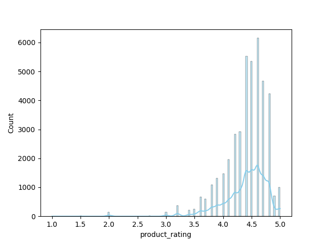Boxplot da variável product_rating: mediana, quartis e outliers.
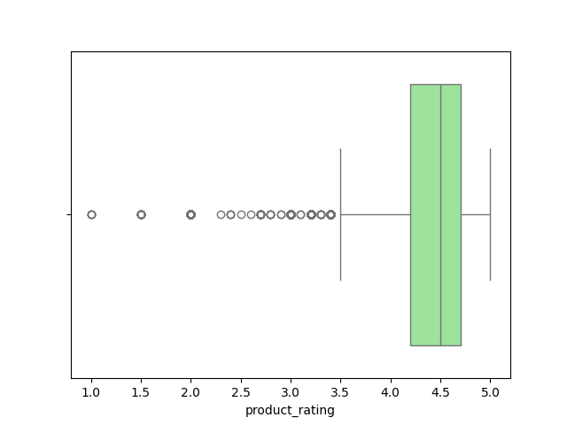Histograma da variável total_reviews: distribuição e tendências.
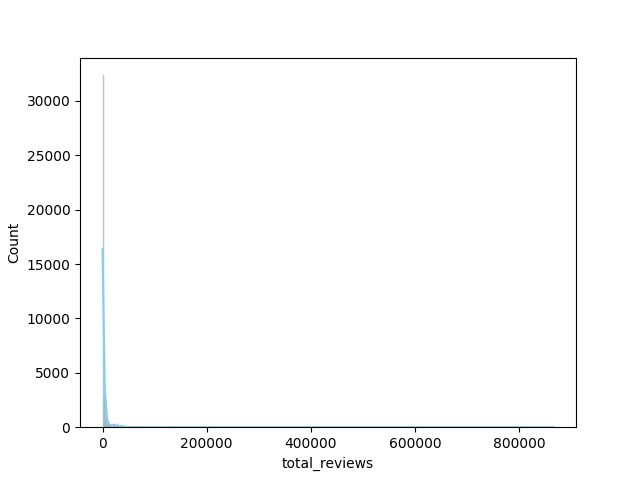Boxplot da variável total_reviews: mediana, quartis e outliers.
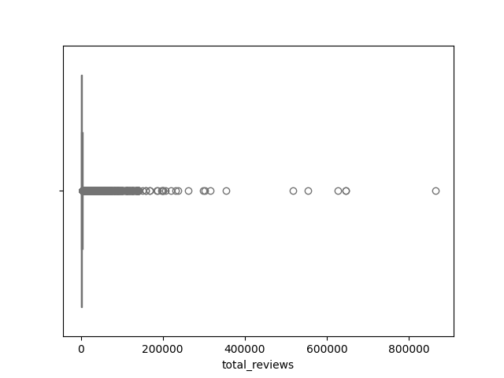Histograma da variável purchased_last_month: distribuição e tendências.
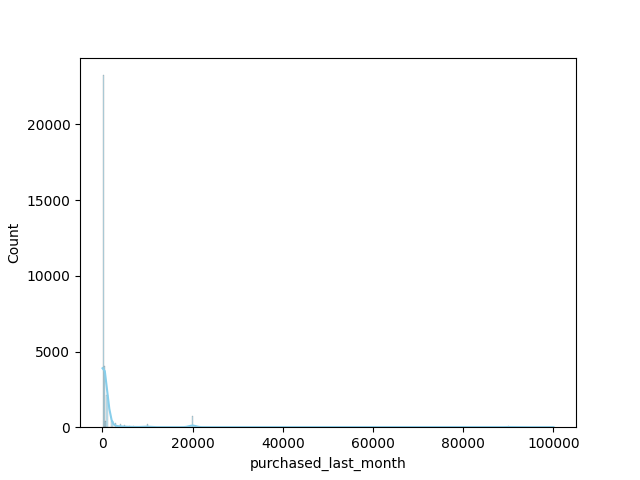Boxplot da variável purchased_last_month: mediana, quartis e outliers.
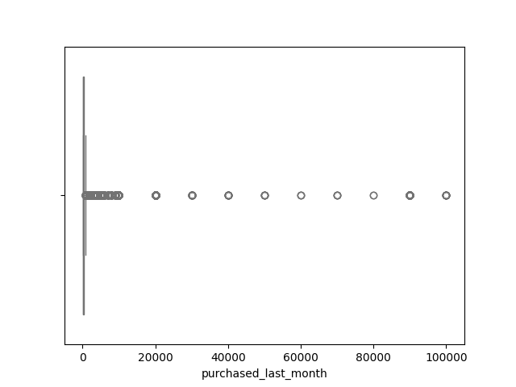Histograma da variável discounted_price: distribuição e tendências.
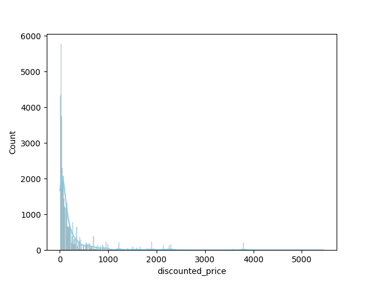Boxplot da variável discounted_price: mediana, quartis e outliers.

Histograma da variável original_price: distribuição e tendências.
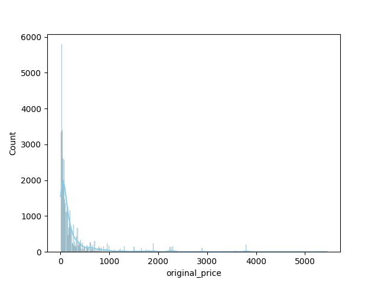Boxplot da variável original_price: mediana, quartis e outliers.
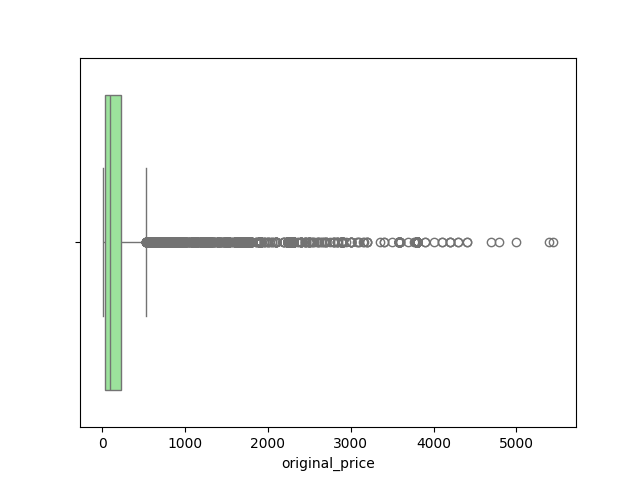Histograma da variável discount_percentage: distribuição e tendências.
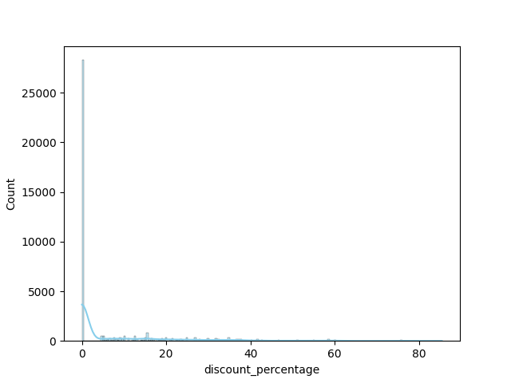Boxplot da variável discount_percentage: mediana, quartis e outliers.
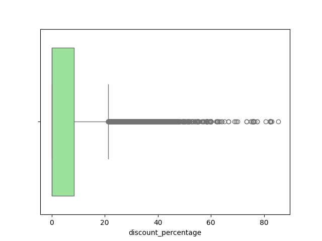(ii) Pré-processamento dos dados
Normalização, codificação de variáveis categóricas e preenchimento de valores ausentes aplicados.
(iii) Treinamento e validação dos modelos
Modelos testados: LinearRegression, RandomForest, GradientBoosting, XGBoost
| Modelo | MAE | RMSE | R2 |
|---|---|---|---|
| LinearRegression | 1819.57 | 5053.85 | 0.2363 |
| RandomForest | 93.91 | 1037.34 | 0.9678 |
| GradientBoosting | 229.77 | 1011.33 | 0.9694 |
| XGBoost | 112.76 | 1165.64 | 0.9594 |
(iv) Interpretação e análise crítica
O modelo RandomForest foi considerado o melhor com base em R2. Os fatores que mais influenciam as vendas são:
- total_reviews: importância 0.3696
- product_image_url: importância 0.3460
- product_page_url: importância 0.1405
- data_collected_at: importância 0.0955
- discounted_price: importância 0.0094
- discount_percentage: importância 0.0085
- original_price: importância 0.0081
- product_rating: importância 0.0064
- product_title: importância 0.0059
- is_sponsored: importância 0.0052
- product_category: importância 0.0020
- delivery_date: importância 0.0009
- is_best_seller: importância 0.0007
- buy_box_availability: importância 0.0006
- sustainability_tags: importância 0.0005
- has_coupon: importância 0.0002
Gráfico das previsões do próximo mês:
Importância dos atributos:
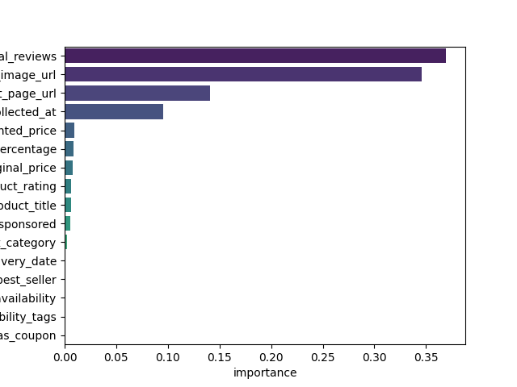